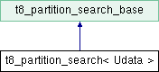

A class that performs a search in the partition of a forest and supports the usage of user data. More...
#include <t8_forest_search.hxx>
Inheritance diagram for t8_partition_search< Udata >:

Public Member Functions | |
| t8_partition_search (t8_partition_search_element_callback< Udata > element_callback, t8_forest_t forest=nullptr, Udata *user_data=nullptr) | |
| Constructor for the t8_partition_search class. More... | |
| void | update_user_data (Udata *udata) |
| Updates the user data associated with the object. More... | |
 Public Member Functions inherited from t8_partition_search_base Public Member Functions inherited from t8_partition_search_base | |
| t8_partition_search_base (t8_forest_t forest=nullptr) | |
| Constructor for the t8_partition_search_base class. More... | |
| void | update_forest (t8_forest_t forest) |
| Update the forest for the search. More... | |
| ~t8_partition_search_base () | |
| Destructor for the t8_partition_search_base class. More... | |
| void | do_search () |
| Perform the search. More... | |
Data Fields | |
| Udata * | user_data |
| A pointer to the user data associated with the object. | |
| Data Fields inherited from t8_partition_search_base | |
| t8_forest_t | forest |
| A pointer to the forest whose partition is searched. | |
Detailed Description
template<typename Udata = void>
class t8_partition_search< Udata >
A class that performs a search in the partition of a forest and supports the usage of user data.
- Template Parameters
-
Udata
Constructor & Destructor Documentation
◆ t8_partition_search()
template<typename Udata = void>
|
inline |
Constructor for the t8_partition_search class.
This constructor initializes a t8_partition_search object with the given element callback, forest, and user data. If the forest is not null, it increments the reference count of the forest and asserts that the forest is committed.
- Parameters
-
[in] element_callback A callback function of type t8_partition_search_element_callback<Udata>. [in] forest A pointer to a t8_forest_t object. Defaults to nullptr. [in] user_data A pointer to a Udata object. Defaults to nullptr.
Member Function Documentation
◆ update_user_data()
template<typename Udata = void>
|
inline |
Updates the user data associated with the object.
This function sets the user data pointer to the provided Udata object.
- Parameters
-
[in] udata A pointer to the Udata object to be set as the user data.
The documentation for this class was generated from the following file:
- src/t8_forest/t8_forest_search/t8_forest_search.hxx